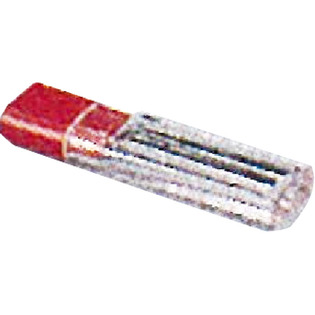
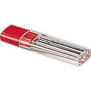
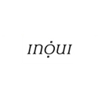

返回列表
产品名称：インウイ ザ ブローライナー（レフィル）

資生堂 インウイ ザ ブローライナー（レフィル） ＢＲ ６５５
メーカー 資生堂
JANコード 4901872306718
商品の特徴
スリムな芯で、眉毛の１本１本まできれいに描けるシャープペンシルタイプのアイブローです。
成分・分量
【成分】
ステアリン酸、モクロウ、マイクロクリスタリンワックス、ミツロウ、水添パーム油、吸着精製ラノリン、エルカ酸オクチルドデシル、酢酸トコフェロール、パーム核油、
パーム油、ビタミンＥ、クエン酸、酸化鉄、酸化チタン
用法及び用量
【使用方法】
・専用ホルダーにセットしてお使いください。